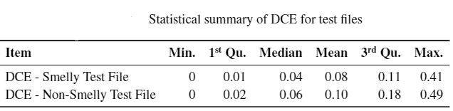
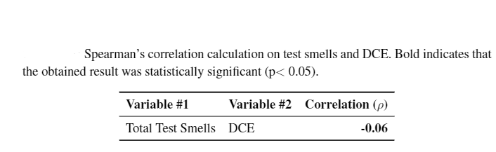

Our investigation into the type of users that introduce test smells into unit test files involved determining the experience of the developer at the time of performing a commit of a smelly file. To this extent, we calculated the Developer Commit Experience (DCE) for each developer for every commit performed by the developer. For each commit made by a developer, we obtain the total number of commits performed by the developer prior to the current commit. We then divide this value by the total number of app commits (regardless of the person who performs the commit). It is by design that the DCE of a developer changes over the development lifetime of the app. This approach ensures that as the app grows, we can accurately capture the experience of the developer during the apps lifetime. A higher DCE value indicates that the developer performing the commit has contributed more to the development of the app, and hence more experienced.
As shown in below table, there is not much of a difference in average DCE values for developers that commit smelly and non-smelly files. A Spearman rank correlation coefficient test to assess the association between test smells and DCE produced a week negative statistically significant correlation. Hence, it is our understanding that developers, regardless of project experience, are probably unaware of test smells. They either introduce smells into test files or do not fix smells already in existence in the test files being updated.
As shown in the below table, the introduction of a smelly test file occurs earlier on in the project; approximately at the 23% of the apps commits. For each identified first commit of a unit test file, we identified the number of test smells (if any) that were exhibited by these files. As shown in the below table, on average, a unit test file is added to a project with 3 test smells.
 